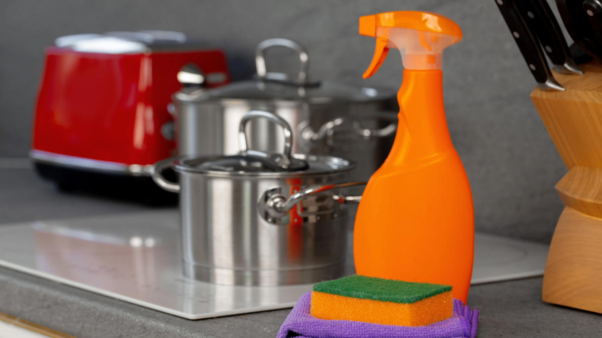

Марка и спецификация
Укажите точную форму, концентрацию, применение, количество, упаковку, место назначения и необходимые документы.
Ингредиент промышленной очистки · Растворитель, носитель и смачивающий компонент · ALC
Спирты для чистящих рецептур — группа растворителей. Для закупки указывают этанол, изопропанол или другой конкретный спирт, концентрацию, содержание воды, денатурирующие компоненты и предполагаемое применение.
Укажите требуемую форму, концентрацией, рецептурой, количеством, местом назначения и документами.

Кратко о продукте
Спирты для чистящих рецептур — группа растворителей. Для закупки указывают этанол, изопропанол или другой конкретный спирт, концентрацию, содержание воды, денатурирующие компоненты и предполагаемое применение.
Пригодность зависит от точного коммерческого уровня, полной рецептуры, субстрата, производственного процесса, рабочего контроля, классификации транспорта и требований целевого рынка.
Руководство для закупщика
Укажите марку, применение, ключевые показатели, количество, упаковку, место назначения и требуемые документы.
Укажите точную форму, концентрацию, применение, количество, упаковку, место назначения и необходимые документы.
Запросите коммерческое предложение из источника с текущей спецификацией, транспортной базой, условия Инкотермс и сроком поставки.
Предоставьте полную формулу, процесс, целевую функцию, подложку, потребности в совместимости и тесты готового продукта.
Запросите спецификацию, методы испытаний, COA, SDS, сведения о классификации, прослеживаемости и изменениях продукта.
Пищевые применения
Это области предварительной оценки рецептур, а не универсальные одобрения, инструкции по использованию, требования к эффективности или гарантированные результаты.
Оценка твердых и институциональных более чистых рецептур с учетом текущей согласованной спецификации, полной рецептуры, условий использования и требований целевого рынка.
Оцените жидкие моющие средства и специальные системы очистки с учетом текущей согласованной спецификации, полной рецептуры, условий использования и требований целевого рынка.
Оценка применения растворителей, несущих и соединительных устройств с учетом текущей согласованной спецификации, полной рецептуры, условий использования и требований целевого рынка.
Оценка технологических и промышленных составов технического обслуживания в соответствии с актуальными согласованными спецификациями, полной рецептурой, условиями использования и требованиями целевого рынка.
Технический отбор
Оценить точную химическую идентификацию и концентрацию в соответствии с действующими согласованными спецификациями, полной рецептурой, условиями использования и требованиями целевого рынка.
Оцените требования к воде, запаху, цвету и остаткам в соответствии с актуальными согласованными спецификациями, полной рецептурой, условиями использования и требованиями целевого рынка.
Оценка точки вспышки, контроля вентиляции и хранения в соответствии с актуальной согласованной спецификацией, полной рецептурой, условиями использования и требованиями целевого рынка.
Оценка совместимости материалов и классификации мест назначения в соответствии с актуальными согласованными спецификациями, полной рецептурой, условиями использования и требованиями целевого рынка.
Техническая документация по запросу
Запросите актуальную спецификацию выбранной марки, технический лист (TDS), методы испытаний и критерии приёмки. Результаты конкретной партии оценивают по её сертификату анализа (COA).
Запросите актуальную спецификацию или техническое описание (TDS), применимый паспорт безопасности (SDS), методы анализа и сертификат анализа (COA).
Подтвердить классификацию, транспортную информацию ООН, где это применимо, совместимую упаковку, сегрегацию хранения и аварийный контроль.
Обзор Химические записи NIH PubChem и Химическая информация ECHAДля дезинфицирующих требований проверьте точную зарегистрированную этикетку готового продукта через Ресурсы EPA США или соответствующим национальным органом.
Условия заявлений о дезинфекции: Идентичность сырья не подтверждает дезинфицирующую эффективность готовой рецептуры. Такие заявления и инструкции должны соответствовать разрешению и утверждённой маркировке готового продукта на целевом рынке.
Хранение и обращение
Вопросы промышленных покупателей
Спирты для чистящих рецептур — группа растворителей. Для закупки указывают этанол, изопропанол или другой конкретный спирт, концентрацию, содержание воды, денатурирующие компоненты и предполагаемое применение.
Укажите конкретный спирт, концентрацию и её базис, воду, денатурирующие компоненты, примеси и паспорт безопасности выбранной марки.
Запросите актуальную спецификацию или TDS, методы испытаний и образец COA выбранной марки. Согласованные критерии приёмки и COA конкретной партии оценивают отдельно.
Запросите спецификацию или TDS, паспорт безопасности (SDS), COA и применимые документы происхождения, качества и производственной площадки. Область действия сертификатов должна относиться к предлагаемой марке.
Укажите марку, форму или концентрацию, применение, ключевые показатели, количество, упаковку, место назначения, необходимые документы, условия Incoterms и требуемую дату поставки.
Связанные разделы
Просмотрите растворители, строители, поверхностно-активные вещества, кислоты, щелочи и окисляющее сырьё.
Обсудите актуальную спецификацию, документы, образцы и коммерческие требования.
Обзор источников и поддержки экспорта для международных закупок химических веществ.
Поставка по согласованной спецификации
Укажите марку, форму или концентрацию, применение, ключевые показатели, количество, упаковку, место назначения и необходимые документы.